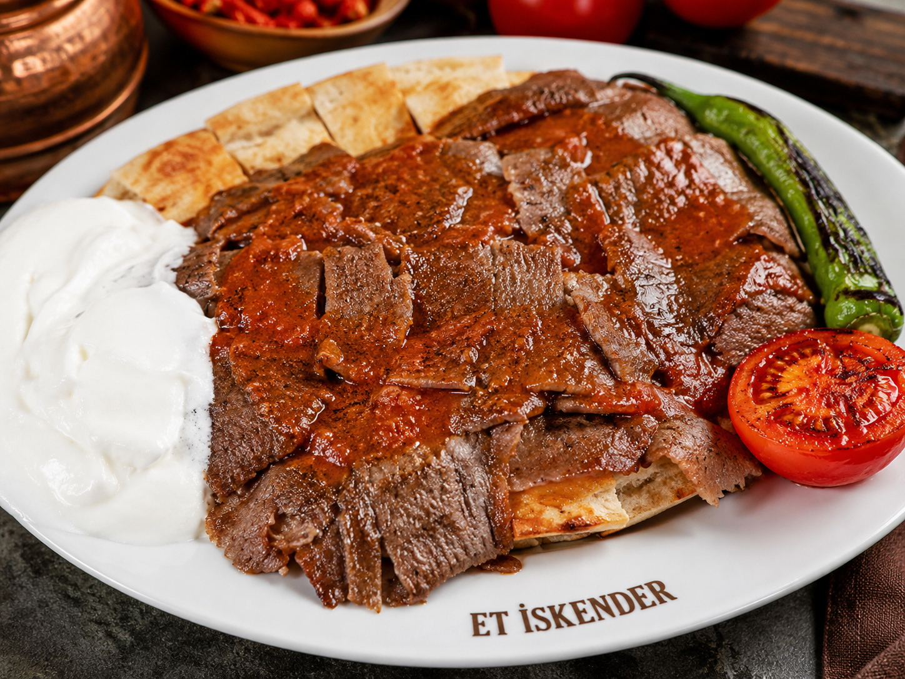
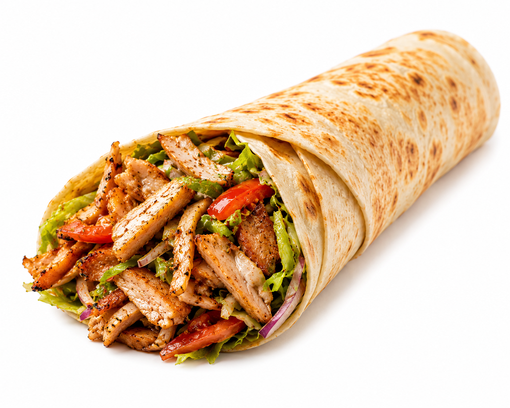
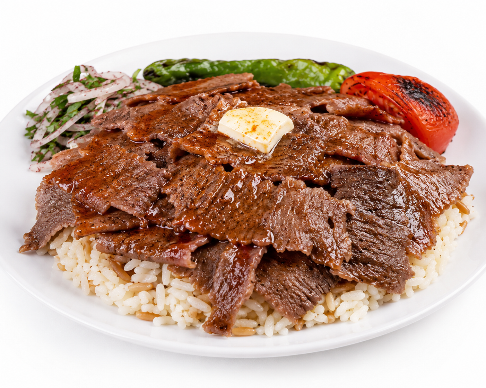
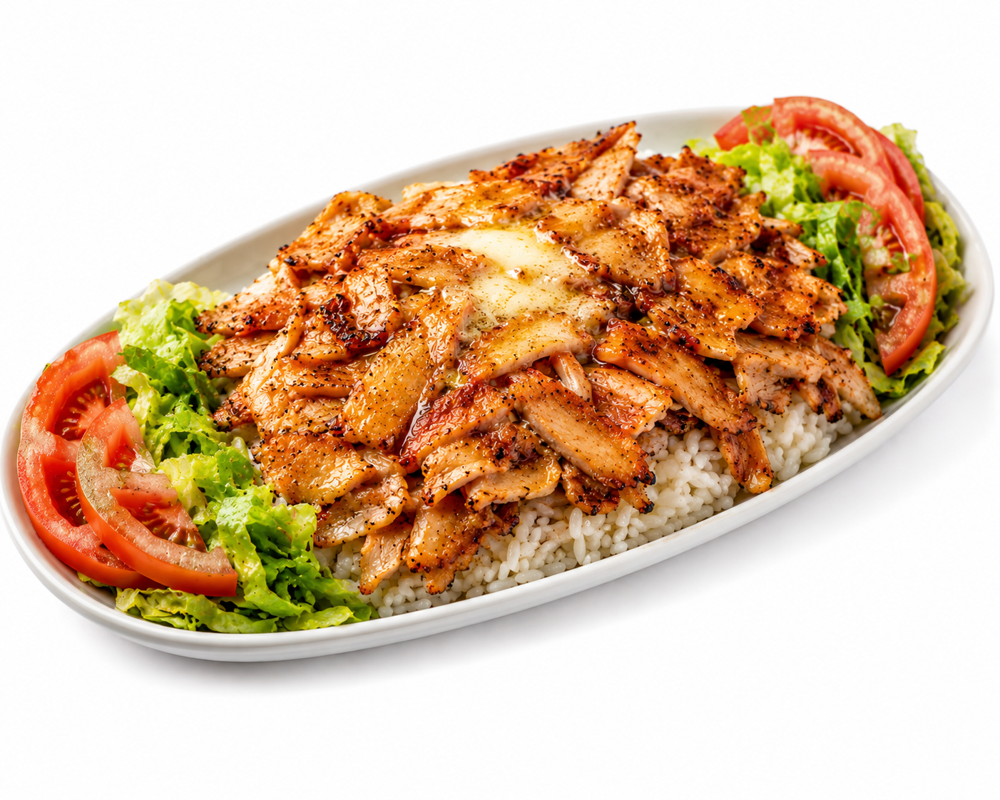

Et İskender
Pide, yaprak et döner, domates sosu, yoğurt ve tereyağı.
Yaprak et döner, tavuk döner, Alman usulü lezzetler ve Hatay usulü dürümler. Güçlü porsiyon, taze malzeme ve hızlı servis.

Marinos Döner’in vitrindeki en güçlü ürünleri.

Pide, yaprak et döner, domates sosu, yoğurt ve tereyağı.

Tereyağlı pilav üzerinde bol yaprak et döner.

Patates, döner, salata ve özel Alman sosu.
Çeşme Cumhuriyet Meydanı • 0542 712 02 70 • @marinosdoner